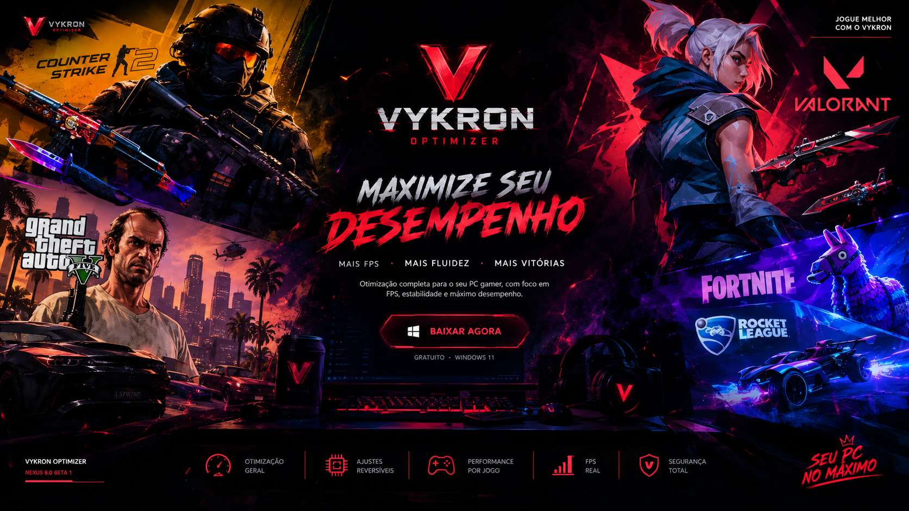

⚡
Smart Optimization
Recomendações e aplicação assistida de ajustes opcionais do Windows, com controle do usuário.

Baixar Vykron.exeO Vykron reúne diagnóstico, monitoramento e ferramentas de ajuste em uma interface gamer. O objetivo é ajudar você a identificar gargalos e controlar atividades opcionais do Windows — sem prometer FPS mágico.
Entenda como CPU, GPU, RAM e processos estão sendo utilizados.
Encontre ajustes opcionais e revise recomendações em um só lugar.
Analise sessões de FPS antes e depois, quando a captura for compatível.
Confirmações, registros e reversão de ajustes compatíveis.
Recursos projetados para análise e ajustes conscientes. A disponibilidade de métricas depende de sensores, permissões, jogos e da versão instalada.
Recomendações e aplicação assistida de ajustes opcionais do Windows, com controle do usuário.
Benchmark antes/depois, tempo de quadro e relatórios comparativos em jogos compatíveis.
Diagnóstico de CPU, GPU, RAM e armazenamento; sensores adicionais quando disponíveis.
Classificação assistida de processos, seleção de opcionais e confirmação antes de finalizar.
Varredura de arquivos temporários com prévia e cuidados para evitar exclusões indevidas.
Histórico e mecanismos de reversão para ajustes compatíveis realizados pelo Vykron.
Ferramentas para preparar o ambiente de jogo e revisar atividades em segundo plano.
Dados do sistema e registros das operações, para entender o que foi realmente alterado.
Visualização de métricas durante jogos, sujeita à compatibilidade e às permissões de captura.
Informações da distribuição atual e requisitos conhecidos. A versão beta ainda precisa de testes em diferentes configurações.
* Ganhos de FPS, redução de latência e estabilidade não são garantidos. O resultado depende do computador, do jogo e do estado inicial do Windows. A disponibilidade de funções descritas pode variar nesta versão beta.
Baixe diretamente o executável do Vykron Optimizer para Windows 11. Sem pacote ZIP para o usuário final.
⬇ DOWNLOAD DIRETO — VYKRON.EXEO arquivo é fornecido pelo GitHub Releases. A disponibilidade depende de uma versão publicada com o nome exato Vykron.exe.